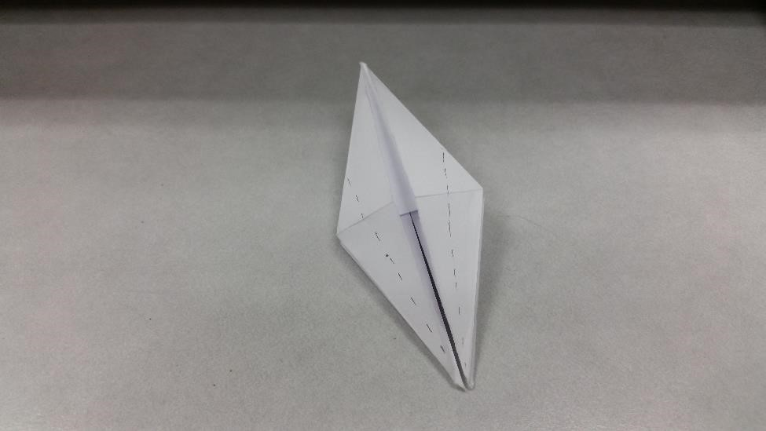
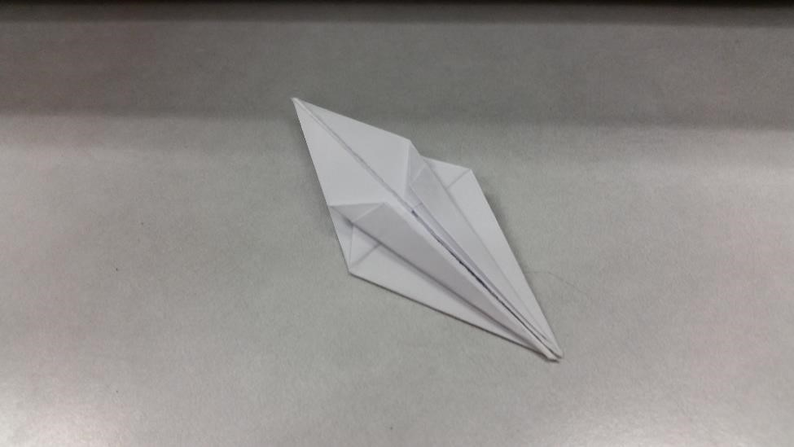
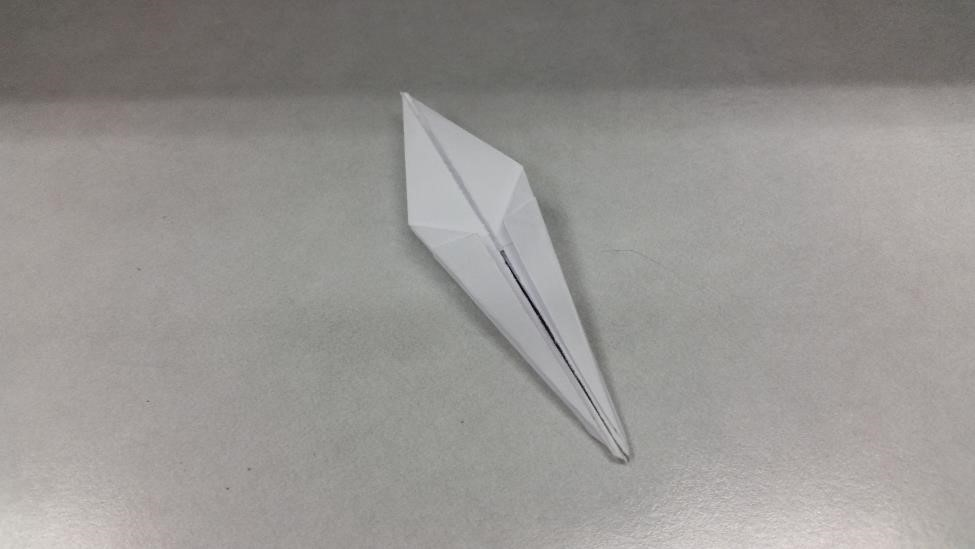
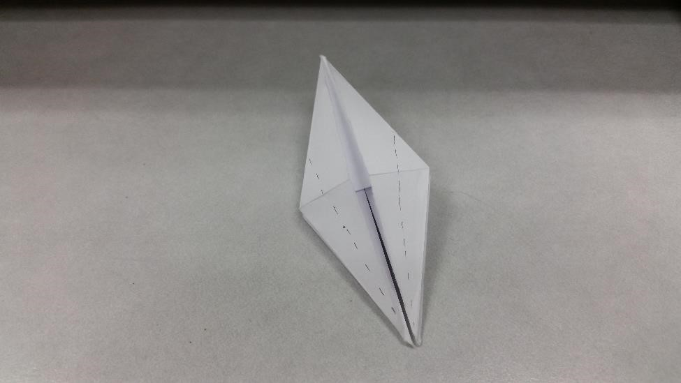
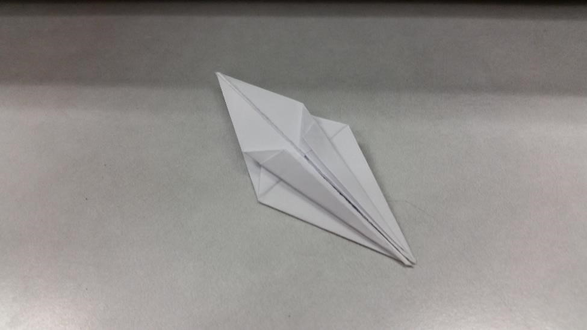
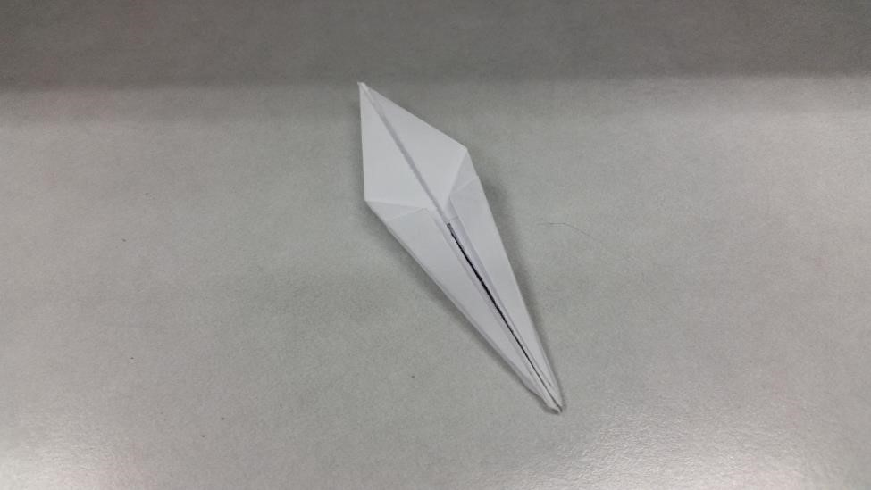

The Origami Crane
This is the classic crane. This is a traditional model that is quintessental of origami.
Learn how to make it below!
Step One: First Folds
Starting with a bird base, fold the bottom folded edges to the center. Flip and repeat.
 





Step Two: Open the Sides
Turn the model on its side and open the side flaps and flatten.
Step Three: Fold the Tail and Neck Up
Using the guideline the photo above, fold the bottom tip up. Flip and repeat.
Step Four: Fold the Tail and Neck Out
Next, you must open the model's side flaps again and flatten. Pull out and fold
the the tail and neck like shown in the photo. Choose one side to become the head,
and fold it by using an inside fold.
Step Five: Fold the Wings Down
Without pulling too far, pull the wings down and hold them, and you should get
your completed crane.
There you have it! You have made the traditional origami crane!